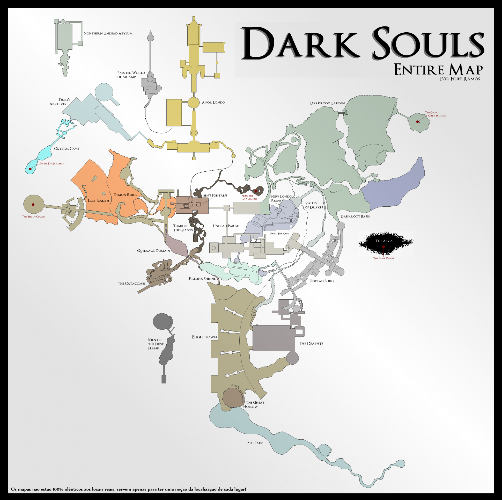
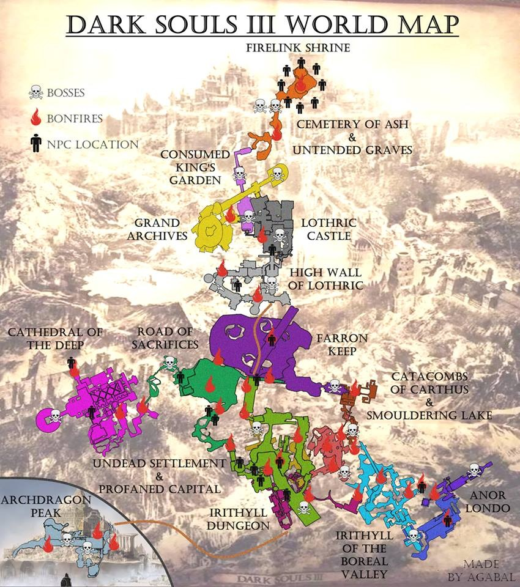

Världen


En av de mest unika aspekterna av Dark Souls-serien är hur världarna är sammanlänkade, både geografiskt och genom tid och rum. Istället för att vara separata nivåer skapar spelen en komplex värld där platser binds ihop på oväntade och ibland mystiska sätt.
I det första Dark Souls utspelar sig spelet i Lordran, där områden är direkt fysiskt kopplade till varandra. Spelaren kan resa mellan olika nivåer genom genvägar och dolda passager. Samtidigt finns det mer mystiska platser som Painted World of Ariamis, en värld som existerar inuti en målning och nås genom en portal. Detta visar att verkligheten i Dark Souls inte bara är fysisk, utan också består av separata dimensioner.
I Dark Souls III har världen börjat brytas ner efter otaliga cykler av att tända den Första Flamman. Riken och tidsperioder flyter samman, och verkligheten blir allt mer instabil. Detta syns i områden som Lothric och särskilt i The Dreg Heap, där rester av gamla världar kollapsar ovanpå varandra.
Ett tydligt exempel på hur tidigare koncept återkommer är Painted World of Ariandel, som introduceras i DLC:n Ashes of Ariandel. Precis som Painted World of Ariamis är det en värld inuti en målning, men här är den i förfall och behöver “brännas” för att kunna förnyas. Detta speglar hela seriens tema om cykler – även konstgjorda världar följer samma mönster av liv, förfall och återfödelse.
Slutligen når spelaren The Ringed City, en plats vid världens ände. Här samlas resterna av historien, och kopplingen till mänsklighetens ursprung blir tydlig. Tillsammans med områden som The Dreg Heap fungerar denna plats som en slutpunkt där alla världar och tider möts.
Dessa olika typer av världar – fysiska platser, målningar och kollapsade dimensioner – visar att Dark Souls-universumet består av flera lager av verklighet. Ju fler gånger cykeln upprepas, desto mer bryts gränserna mellan dessa lager ner, tills allt till slut smälter samman.